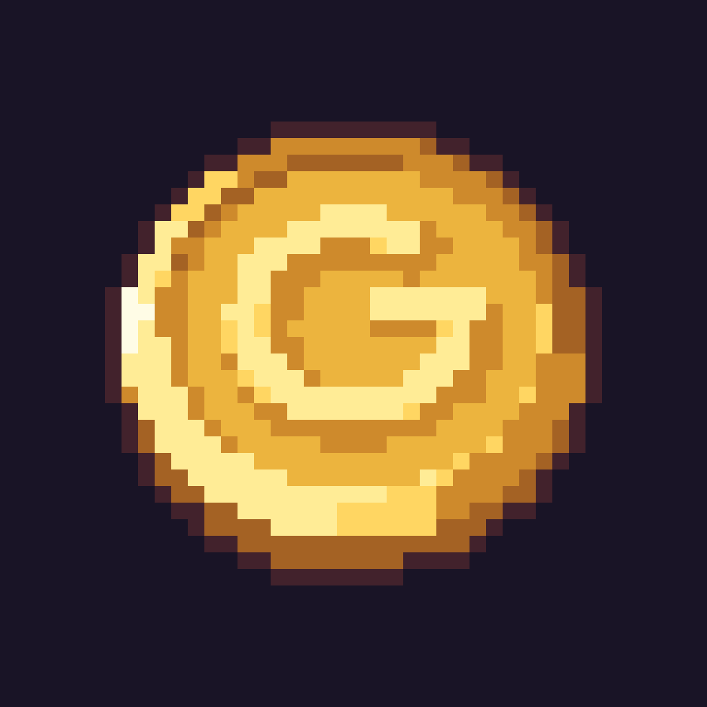

Golden Wyrm StudioTerms of Service
Effective November 14, 2026
These terms cover the clip uploader of Golden Wyrm Studio ("the app", "we"): a command-line tool that sends video clips of the studio's games to a TikTok account as drafts, through TikTok's Login Kit and Content Posting API.
1. Who may use the app
The app is an internal tool. It is not offered to the public: only the studio and the TikTok accounts it owns use it. By connecting a TikTok account to the app, you confirm that you are authorized to act for that account.
2. What the app does
With your permission, granted on TikTok's own authorization page, the app
uploads a video file you choose to your TikTok account's inbox as a draft
(scope video.upload). It never publishes anything by itself: you
review each draft, write its caption and choose to post it, or not, in the
TikTok app.
3. Your content
You keep every right to the videos you upload, and you are responsible for them. Every video must comply with TikTok's Terms of Service and Community Guidelines.
4. TikTok
TikTok is a service of its own, run by a third party under its own terms. The app is not made, endorsed or supported by TikTok.
5. Ending the connection
You can disconnect the app at any time, from the app itself (which revokes its access) or from your TikTok account's settings. We may stop the app at any time.
6. No warranty
The app is provided "as is", without warranty of any kind. To the extent the law allows, the studio is not liable for any loss arising from its use, including a failed or delayed upload.
7. Changes
We may update these terms; the date above shows the latest version.
8. Contact
Questions: open an issue at github.com/alex892-droid/golden-wyrm-studio/issues.